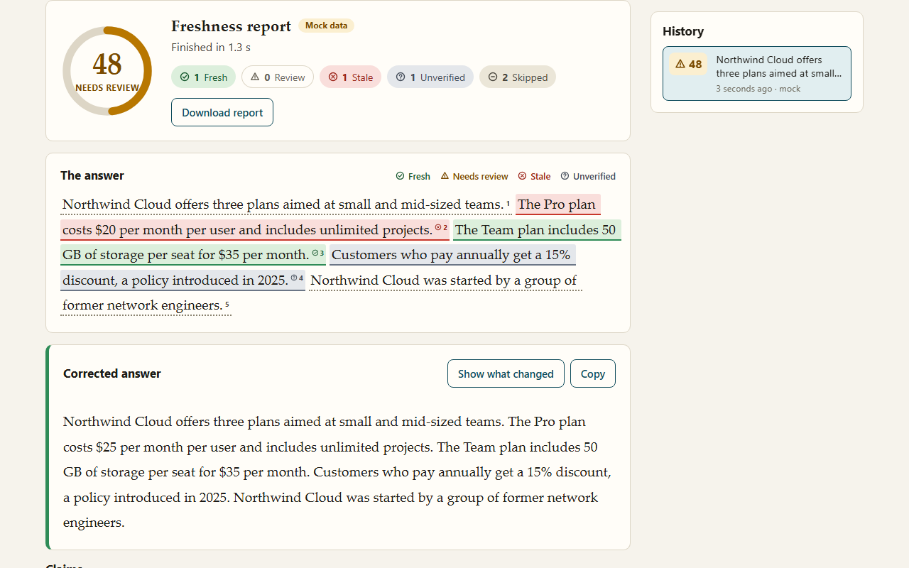

Tavily + Bifrost
StaleGuard
Catch outdated facts in LLM answers: re-check each claim against the live web and score its freshness.
$ docker compose up
Catch outdated facts in LLM answers: re-check each claim against the live web and score its freshness.
